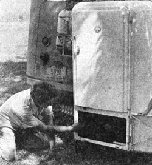
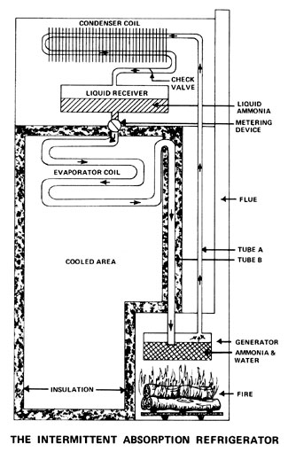
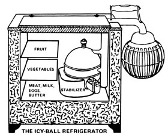
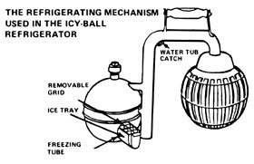

Just like a lot of other folks, the Dale Degler family spent the summer of '75 truckin' around the country in an old, converted school bus. Unlike most of those others, however, Dale used his time on the road to pioneer several interesting new ideas in low-energy and self-sufficient living.
Ideas such as The Incredible Degler Wood-Burning Refrigerator. No, it hasn't been built yet. The fridge you see here with Dale is nothing more than an antique Servel gas-powered cooler that Degler has converted to operate on propane. But Dale assures one and all that his wood-burning chiller will soon be constructed and in operation.
"Actually, I'm not doing anything new," he says. "The wood-burning refrigerator will be nothing more than an intermittent absorption unit . . . and the design was well known and even mildly popular back before every neighborhood in the country was wired up with the steady supplies of electricity that now make 'ordinary' refrigerators possible."
To prove his point, Degler quickly pencils a sketch (see accompanying illustration) that explains the operation of an intermittent absorption chill chest. And, by golly, the explanation makes sense.
"This type of refrigerator has both advantages and disadvantages," says Degler. "The main disadvantage is that no one is building such a unit now, which means that you can't just go out and buy one like you can a regular fridge. A secondary disadvantage is the fact that, although heat needs to be applied to the unit only once a day, that heat does have to be applied every 24 hours . . . week-long vacations, in other words, are out unless you have an automatic timer on your burner.
"To offset these two points, however, you have at least five things working in favor of the intermittent absorption refrigerator: [1] the unit will operate on a relatively small energy input, [2] it can produce subzero temperatures for 24 hours from a single 20-minute application of heat, [3] any heat source-electric, oil, gas, candle, solar, wood, etc. -will power the refrigerator, [4] the unit is simple and self-circulating, and [5] other than having its flue cleaned from time to time, the cooler requires little or no maintenance."
Dale emphasizes that, although any source of heat will set the intermittent absorption refrigeration cycle into operation, he's choosing wood because "it's widely available and appears to be nonpolluting". If pressed hard enough, he also admits that his woodburning refrigerator is only the first of several low-energy systems he hopes to build.
"I've worked in the heating and plumbing business," Degler says, and, during the winter, I instruct a course in heating and air conditioning at Indiana Vocational Technical College. Both my job and my teaching experience have led me to believe that all our life support systems-water, sewage, heat, refrigeration, etc.-can blend a lot better with nature and use a great deal less energy than they currently do. During the coming winter I hope to test this theory by converting an ordinary house in Indianapolis into an energy-independent, self-sufficient dwelling."
And, if he does, Dale has promised to send us a complete blow-by-blow report on his progress. In the meantime, though, does anyone out there want to try to beat Degler into production with a wood-burning fridge?
The generator is filled with a mixture of water and ammonia and heat is applied. This causes pressure to build and forces the ammonia-which boils at a lower temperature than water-to separate out of the solution and pass through Tube A to the condenser, where the gas gives up its heat and changes back to a liquid. As the ammonia liquefies, the fluid flows into a receiver or reservoir.
The receiver is equipped with a metering valve that allows the liquid ammonia to slowly seep into a long evaporator coil (B) which leads back to the water still left in the generator. The ammonia is attracted to the water-the NH 3 "wants" to recombine with the H 2 O-at this point . . . and it can only do so by evaporating through the long tube that runs from the metering valve to the generator. And, of course, it can only evaporate by expanding and drawing heat energy from the compartment through which the tube passes. Thus, if that compartment is well insulated and there's enough ammonia in the system, a single 20-minute application of heat can cool the freezer chest to below zero for 24 hours.
Yep. Dale Degler is right. Refrigerators using the absorption principle really were manufactured at one time. As a matter of fact, The International Solar Power Co. Ltd. of 22B, Rosenkaeret, DK-2860, SØborg, Denmark asked MOTHER recently (see Energy Flashes in THE Mother Earth News, NO. 32) to help track down one of the portable absorption type refrigerators marketed during the 1920's and 1930's in Canada and the United States.
That particular unit was known as the "Icy-Ball" and it was sold in the U.S. by the Crosley Corporation. As the accompanying illustration shows, the cooler consisted of nothing but an insulated box with a door on the top and a detachable refrigerating mechanism. Each cooling chest was also equipped with a kerosene stove and a water bucket.
To put the Icy-Ball refrigerator into operation, the "generator" end of the chilling mechanism was placed over the lighted stove and the other end was put in a bucket filled with cold water. After 90 minutes the device was transferred to the insulated box and positioned so that the generator end was out in the open air and the freezer end inside the chest. So placed, the cooling unit would actually freeze ice cubes and otherwise refrigerate the box for from 24 to 36 hours.
Spokesmen for The International Solar Power Co. Ltd. say that the Icy-Ball apparatus was "cheap, efficient, and practical and only suffered from one snag: during the boiling-out of the ammonia, some water vapor was carried over to the condenser/evaporator and the efficiency of the system was thereby reduced".
The same company officials state that the Icy-Ball was invented and patented during the 1920's by a Canadian named David Forbes Keith, that the original patents have long since expired, and that they think-just as Dale Degler does that the intermittent absorption refrigerator is due for a big comeback. The International Solar Power people's view of the whole absorption freezer concept, in fact, differs from Dale's in only two major respects: They figure that [1) such a system will have to be recharged for one to two hours every day instead of 20 minutes and [21 the unit should be run on solar energy instead of with wood power.
|
 |
 |
 |
|
 |
|
|